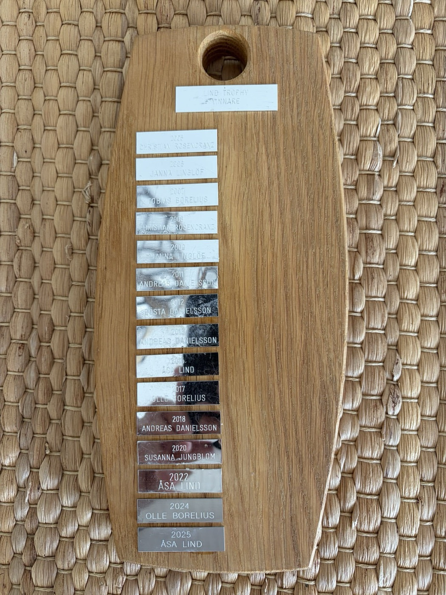
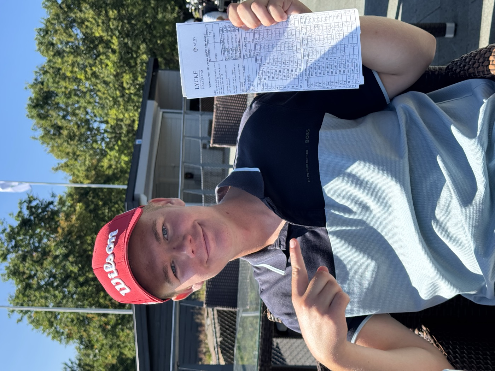
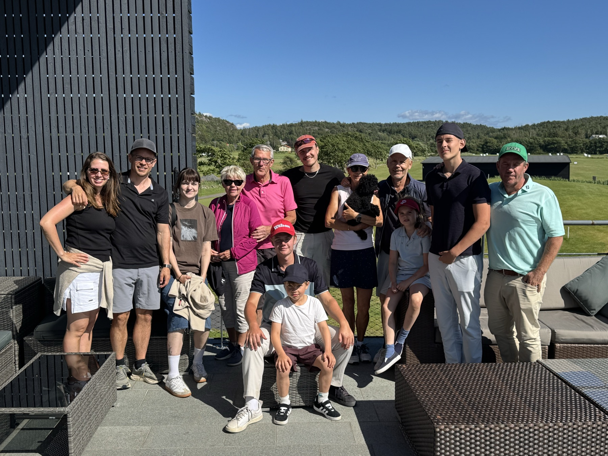
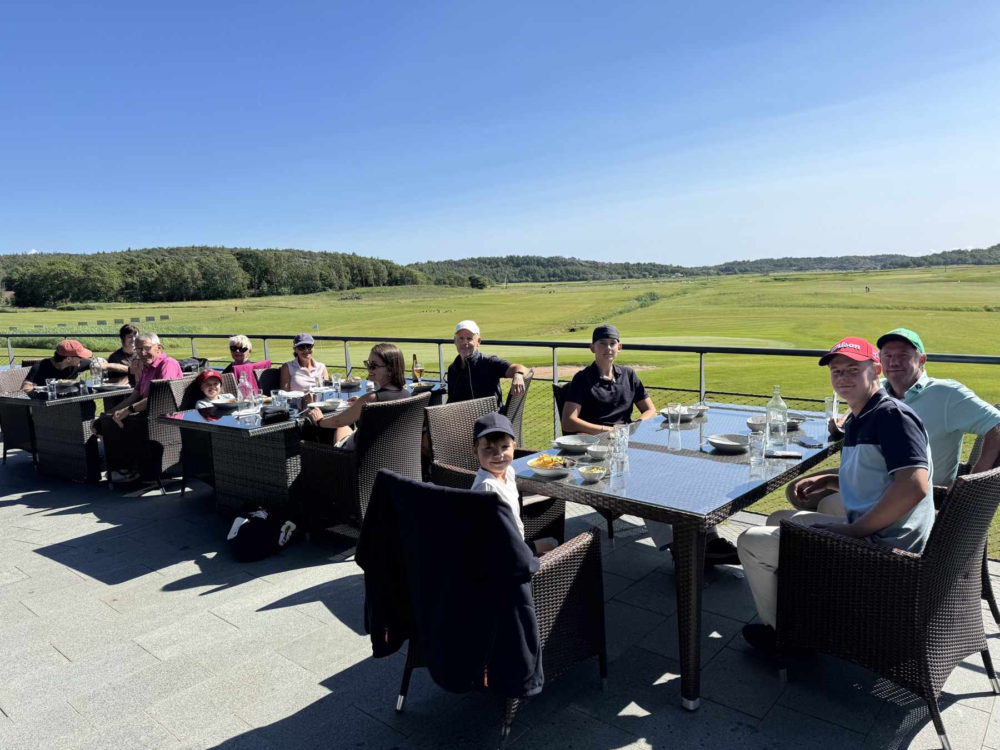
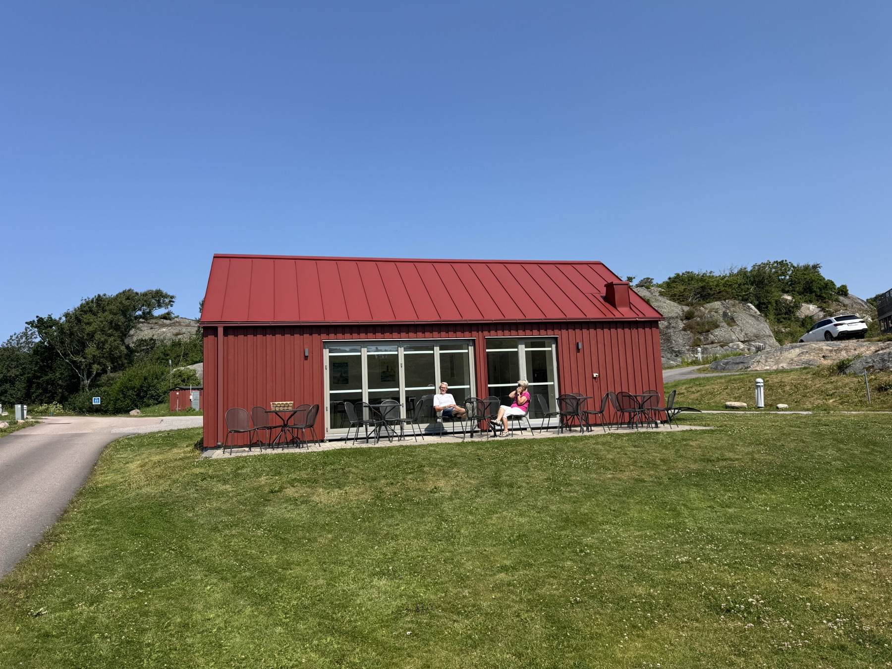

Spelform
18 hål poängbogey med full handicap — dock högst 36. Flest poäng vinner äran och sitt namn på Hederstavlan. Vid lika poäng segrar spelaren med bäst handicap.
The Lind Invitational
En tradition som ingen annan
2026 års mästare
Max Linglöf
Nästa upplaga · Kalmar Golfklubb · 3–4 juli 2027
Tävlingen
Varje sommar sedan 2005 samlas släkten för det som vuxit till årets mest omtalade idrottsevenemang — åtminstone runt vårt eget middagsbord. Släktgolfen är mer än arton hål: det är skryträttigheter för ett helt år, det är gamla oförrätter som ska rättas till på greenerna, och det är en plats på Hederstavlan som väntar på sitt nästa namn.
Här möts generationerna på lika villkor. Handicapsystemet ser till att farfar kan slå sonsonen, att svågern kan detroniseras och att den som knappt hållit i en klubba sedan förra sommaren fortfarande kan gå hela vägen. Allt avgörs på banan — och diskuteras i evighet efteråt.
Tävlingshelgen inleds traditionsenligt kvällen före med gemensam middag och aktiviteter. Sedan avgörs allt ute på banan, och efter sista puttern väntar prisceremonin — där segrarens namn för all framtid graveras in i Hederstavlan. Applåder är obligatoriska. Ödmjukhet hos segraren är det inte.
”Majorerna är fyra. Släktgolfen är den femte.”
— Tävlingskommittén
Nästa bana · 2027
Golf vid Kalmarsund — sedan 1947
Släktgolfen flyttar österut. 2027 avgörs tävlingen på anrika Kalmar Golfklubb, grundad 1947 och en av sydöstra Sveriges främsta golfanläggningar — 36 hål fördelade på två banor, vackert belägna vid Kalmarsund.
Gamla Banan är en skogs- och parkbana med kustnära inslag där första hålet spelas med utsikt över sundet, omgestaltad 2009 av Ryder Cup-spelaren Pierre Fulke. Nya Banan från 1992 bjuder på parkgolf genom tallskogsalléer med vattenhinder som straffar den övermodige.
Vilken av banorna som får äran att kröna 2027 års mästare meddelas närmare tävlingen. Klart är att havsluften följer med från Bohuslän — liksom vanan att skylla på vinden.
Värdbanorna
Likt majorerna vandrar Släktgolfen mellan Sveriges banor
Var de första upplagorna spelades utreds av tävlingskommitténs historiska avdelning. Tips mottages tacksamt.
Spelet
18 hål poängbogey med full handicap — dock högst 36. Flest poäng vinner äran och sitt namn på Hederstavlan. Vid lika poäng segrar spelaren med bäst handicap.
Startavgiften är 200 kr per spelare. Segraren belönas med 700 kr och tvåan med 300 kr. Äran ingår utan extra kostnad — den är dock det enda som varar.
Närmast hål och längsta drive belönas med 300 kr vardera. Sämsta score på ett enskilt hål förevigas i protokollet, för framtida generationer.
Tävlingshelgen inleds på lördagen med gemensam grillbuffé, kubbspel, bastu och båtåkning. Taktiksnack uppmuntras. Psykningar inför söndagen förväntas.

Trofén
Segraren i Släktgolfen vinner ingen pokal att damma av och ingen kavaj att hänga in i garderoben. Segraren vinner det enda som består: äran — och sitt namn, för all framtid ingraverat i Lind Trophy, träbrädan där tävlingens mästare förevigats sedan 2005.
Pengar spenderas. Formkurvor dalar. Men det som en gång ristats i trä kan ingen ta ifrån dig. Sexton plaketter sitter nu på plats — den senaste bär namnet Max Linglöf. Raden för 2027 väntar i Kalmar.
Hedersgalleriet
Namnen som redan pryder Hederstavlan
| År | Mästare | Bana | Titel |
|---|
Arkivet
Lycke Golf & Country Club · 5 juli 2026

Mästaren
I sin jakt på en första titel höll Max Linglöf huvudet kallt när det blåste som mest över Lycke. Scorekortet talar sitt tydliga språk — och pekfingret likaså. Namnet graveras nu in i Lind Trophy, och skryträttigheterna gäller till juli 2027.



Nästa upplaga
Tävlingskommittén meddelar att Släktgolfen 2027 avgörs på Kalmar Golfklubb. Boka helgen redan nu — Hederstavlan väntar på sitt sjuttonde namn.
Anmälan öppnar närmare tävlingen · Detaljer meddelas av tävlingskommittén